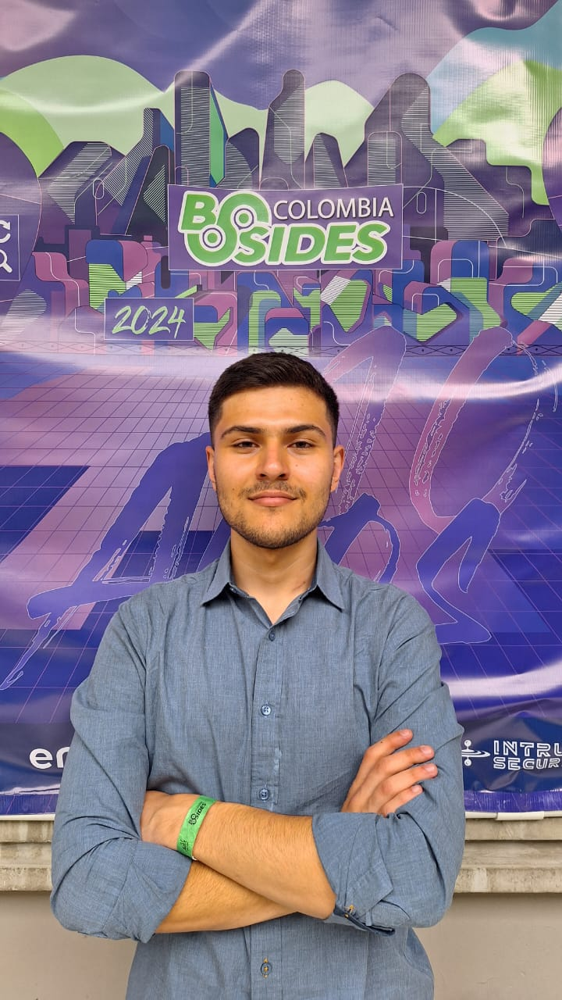

MSc Computer Vision @ MBZUAI
Juan Nicolas Sepulveda Arias
AI safety, security, and computer vision researcher focused on robustness evaluation, watermarking, and generative model security.

Research Focus
Safety-centered work on generative models and visual systems.
I work on AI safety and fairness for generative models, with emphasis on adversarial robustness, red-teaming, and content authenticity.
Generative Model Safety
Evaluation of failure modes, fairness metrics, and security risks in modern AI systems.
Robustness & Red-Teaming
Jailbreak robustness, adversarial testing, and failure analysis for LLM and vision systems.
Watermarking & Authenticity
Content provenance and watermarking methods for diffusion models, LLMs, and generated media.
Featured Work
Projects presented as evidence, not just entries.
The strongest work is grouped around outcomes, methods, and technical signals visitors can scan quickly.
Malware generation + detection with interpretability
Using GANs to Detect Cyberthreats
Trained a GAN on VirusShare to detect and generate obfuscated and non-obfuscated binary malware samples, with interpretability and reverse-engineering analysis.
- Accuracy
- 92% to 95%
- Methods
- GANs, GradCAM, hooks
- Domain
- Cybersecurity
Weather-robust detection with YOLOv8
Traffic Signs Recognition Systems
Fine-tuned YOLOv8 on GTSRB with simulated fog, night, and rain, then tuned the final layer to improve detection robustness.
- mAP50-95
- 0.39 to 0.65
- Stack
- YOLOv8, GTSRB
Experience
A compact timeline of research, engineering, and leadership.
MSc in Computer Vision, MBZUAI
Fully funded scholarship with coursework in generative AI safety, ML security, and visual computing.
Graduate Researcher, MBZUAI
Research under Nils Lukas on AI fairness metrics and watermarking methods for generative models.
RLHF/SFT Python Coder, Turing
Produced code-writing examples and rubric-based evaluations for model failure analysis.
Software Engineering Intern, DevSavant
Built and deployed a Django and OpenAI API MVP for assisted autobiography writing.
IEEE Computer Society Student Chapter President
Organized competitions, executive AI workshops, and the Code The Future hackathon.
Technical Toolkit
Grouped for scanning across research and implementation.
ML / AI
Development
Languages
Contact